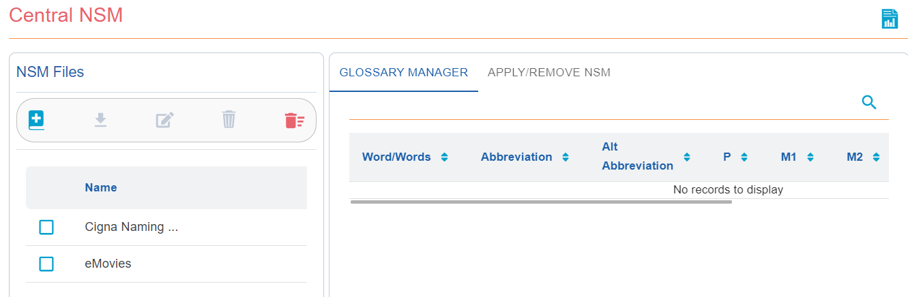

Add NSM Files
You can add NSM files to the mart in the CSV format. Once you have added them, you can view or edit them.
To add NSM files, follow these steps:
- Go to Application Menu > Central NSM.
The Central NSM page appears.

- In the NSM Files pane, click .
The Add File page appears.
- Enter a Name.
Note: Ensure that the:- NSM file name uses English characters only.
- NSM file and its contents follow appropriate character set encoding:
- erwin Mart: UTF-8
- erwin Data Modeler: ANSI
- Drag and drop an NSM file or click and browse one.
- Select an NSM file (CSV format).
- Click Submit.
The selected NSM file is added to the central repository.
Note: If you use Internet Explorer to open erwin Mart Administrator, you can add only 25 NSM files to the NSM File Manager.
- Select the NSM file to view it in Glossary Manager pane.
Edit NSM Files
You can edit an existing naming standard or add a new one.
To edit an existing naming standard, follow these steps:
- On the Glossary Manager tab, select a naming standard and click
 .
.
- Edit the naming standard in-line.
- Click .
You can also download an NSM file to a local path. In the NSM Files pane, click . Then, edit it in an external program and upload it back to NSM File Management.